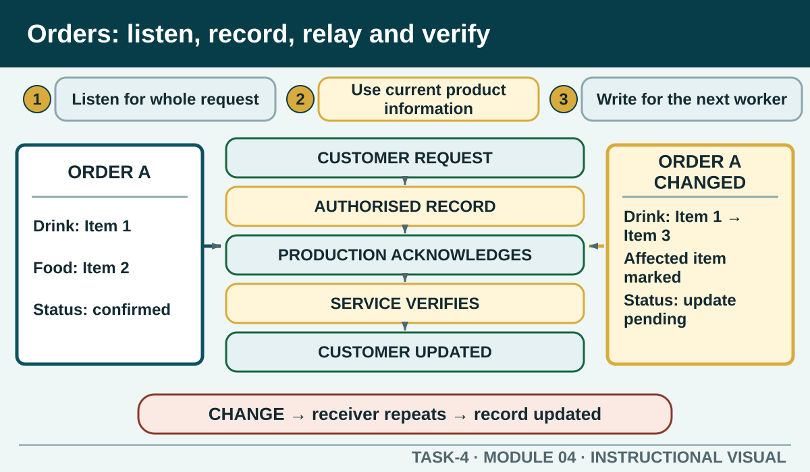

Gather customer information accurately, record it through the authorised system and close the communication loop from the customer to production and back to service.
Learning intention
What success looks like
I can use open, closed and confirming questions for a food or beverage order.
I can separate verified menu information from a promise outside my product knowledge or authority.
I can describe the essential information path from customer request to production and service.
I can respond to a changed order or delay by updating the authorised record and affected people.
Core ideas
Build the complete picture
1
Create a useful opening and listen for the whole request
2
Advise from current product information
3
Write an order another person can act on
4
Close the loop with production
Visual explanation
Orders: listen, record, relay and verify

Students identify where an order message can break and what evidence closes each communication loop.
Worked example
Create a useful opening and listen for the whole request
Welcome the customer according to the current service standard, offer assistance and listen without interrupting. The first statement may not contain enough information to prepare the order. Use an open question to understand the request, targeted closed questions for relevant choices, then confirmation to test that your record matches what the customer meant.
A customer asks for two coffees, one with different milk. The worker identifies which drink is modified, verifies the current milk option and repeats both complete drinks rather than recording only different milk.
Question the room
A customer says, 'One regular and one with different milk.' What is the strongest next action?
Record different milk beside the order and let production decide which drink it belongs to.
Ask which drink is modified, confirm the current milk option and repeat both complete drinks.
Assume the larger drink receives the modification.
Apply
Closed-loop team handover
Handover stimulus: Table 6 is waiting for two hot drinks. One customer requested a non-dairy option; the authorised product has been confirmed and the cups are ready. The espresso machine has just shown an unfamiliar warning. No drink has been started. The supervisor needs to be told before equipment use continues.
Build a concise handover from the stimulus.
Deliver it to a partner.
Receiver repeats the order, constraint and next action.
Observer checks the nine fields and records one improvement.
Exit ticket
Action · evidence · next step
Write the complete communication trail for a fictional order that changes after it reaches production. Show the clarification, order record, relay, confirmation, customer update and final verification.
One action I would take
The evidence I would check
The person or source I would confirm with
My next improvement
1 of 8
Speaker notes and delivery prompts
Open with this purpose: Gather customer information accurately, record it through the authorised system and close the communication loop from the customer to production and back to service.
Use Create a useful opening and listen for the whole request to connect prior learning to the first observable workplace decision.
Model Create a useful opening and listen for the whole request by walking through this supplied example: A customer asks for two coffees, one with different milk. The worker identifies which drink is modified, verifies the current milk option and repeats both complete drinks rather than recording only different milk.
Ask: A customer says, 'One regular and one with different milk.' What is the strongest next action? Confirm the strongest response as Ask which drink is modified, confirm the current milk option and repeat both complete drinks..
Listen for this misconception: Not yet. The modification is unusable until the exact affected product and approved option are clear.
Move into Closed-loop team handover, then collect the saved response and finish with the source boundary: Authorised source note: Customer advice, order accuracy, special-request relay, service verification and delay follow-up are source-supported. The live ordering system, menu, allergy process, escalation authority and payment procedure remain local. Source references: TEACHER-T4-TOPICS, TGA-SITHFAB025, TGA-SITHFAB027, TGA-SITHIND007, SITE-T4-V2.